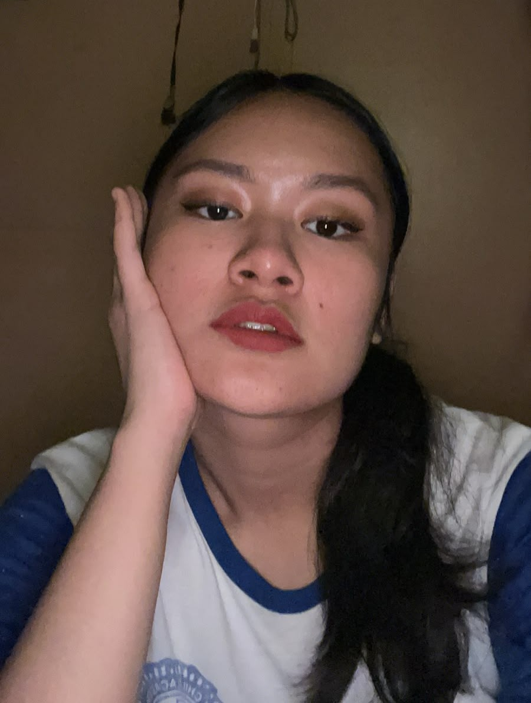
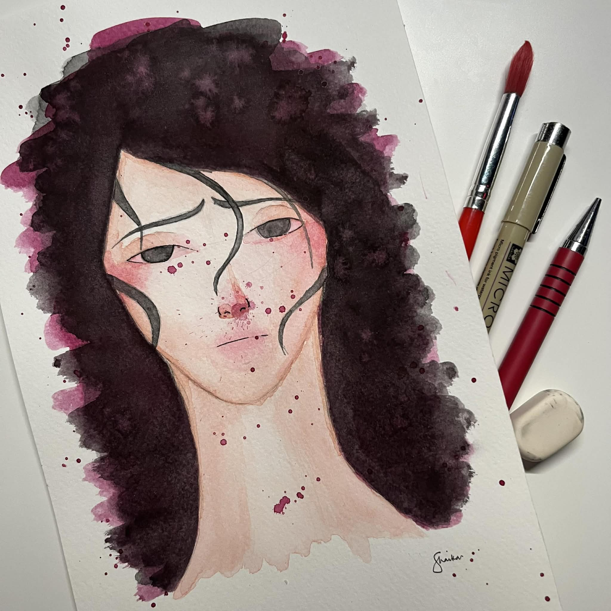
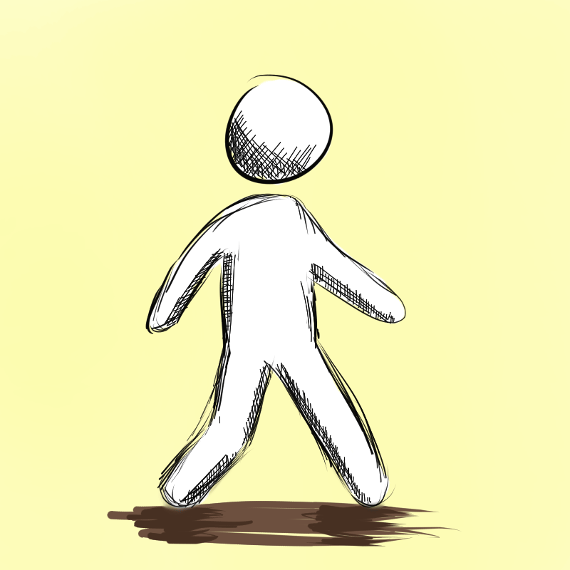
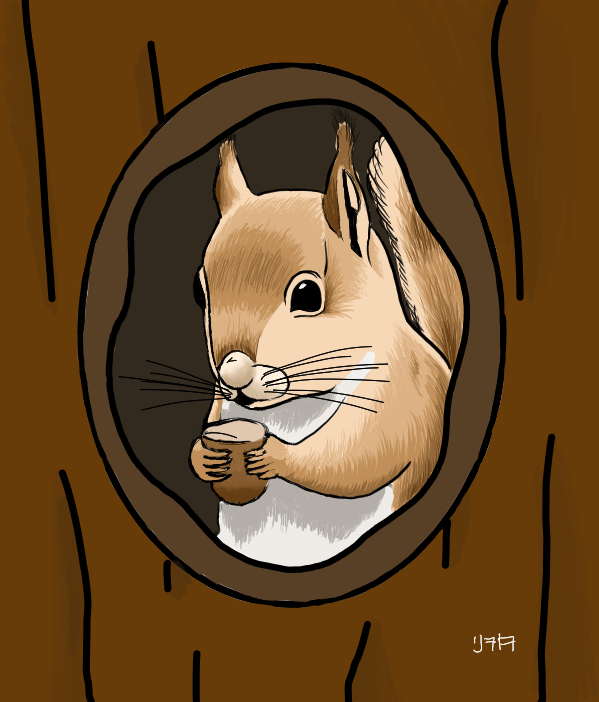

This is me ^-^
A Brief About Me
My full name is Shaika Rhines D. Namia, a 22-year-old girl residing in Caloocan City. I am currently a 4th-year BAMS student at the University of the Philippines Open University.
A student, an artist, and someone who wants contentment and happiness in life.
Outside school, I enjoy...
My Hobbies
Here are some of the little things I love that I do in my free time to make me happy.
Playing Games
I usually play farming games such as Stardew Valley, Terraria, and Coral Island, as well as competitive games such as Valorant and Mobile Legends.
Doing Art
I enjoy traditional art and miniature making. I started exploring these creative hobbies when I was still in elementary school.
Watching Playthroughs
I enjoy watching Filipino YouTubers, especially Peenoise Plays, because of their funny and entertaining gaming videos.
Family Time
I make sure to spend time with my family every weekend. It is one of the things I always look forward to.
Camping
Camping is my way of de-stressing and enjoying nature away from home and school.
Cooking
Cooking helps me release stress and allows me to explore and experiment with different dishes.
A little creativity
Passion Projects
These are projects I have made that challenged my skills and expressed my creativity.

Traditional Art
Drowning Girl
This is the most recent traditional watercolor artwork I have made since entering college. This has also been one of my cleanest watercolor artwork since I have started doing watercolor painting.

Moving Pictures
A Walking Person
This is the most recent animation I have done. I used a ragged art style to add uniqueness to its appearance. This is one of the passion projects that I enjoyed doing.

Digital Art
Squirrel in a Tree
This is the first digital artwork that I have made. I have enjoyed creating this since I was able to apply techniques in doing textures and little details digitally.